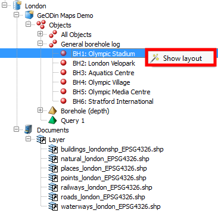
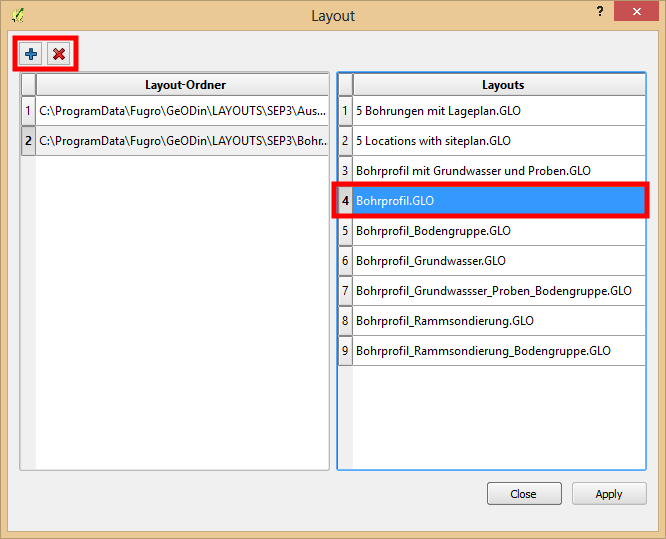
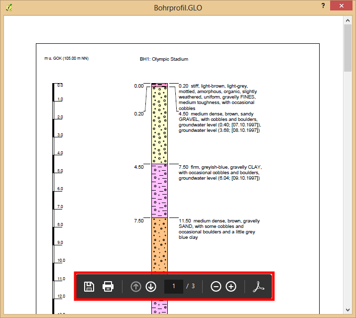

The layout view is executed at object itself. To so expand the database tree to the lowerest level, the object level, and open the right click menu at the proper object.  A new dialog opens to declare both the layout directory and the preferred layout. The upper toolbar allows to add a layout folder to the list. For this the default layout directory of the GeODin installation is used. A folder can be deleted from the list in the same way. The right table view contains all layouts which are part of the selected layout directory.  The layout view is a visualisation of a temporary PDF file. Thereby the common PDF controls like zooming and page change are available. All preferred layout settings must be set in GeODin, the plugin only provides the layout view. 